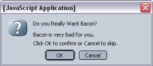
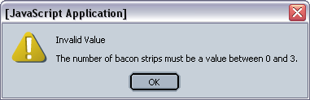

Sun Web Application Guidelines - Version 4.1
Sun Web Application Guidelines - Version 4.1
|
|
|
| [ Table of Contents | 0 Revision History | 1 Introduction | 2 Visual Design | 3 Windows and Pages | 4 Mastheads | 5 Top-Level Navigation | 6 Content Area | 7 Simple Elements | 8 Complex Elements | 9 Tables | 10 Topology | 11 Contextual Help | 12 Search | 13 Wizards | 14 Alerts and Messages | 15 Progress Indicators | 16 Alarms and Status Indicators | 17 Login Page | 18 Version Page | Appendices ] |
How To Use These Guidelines - An Introduction
3 Windows and Content Pages > 3.3 JavaScript Windows
JavaScript windows come in three implementation types: confirmation, alert, and prompt (all fully modal, but limited in controls). They prevent interaction with the browser so the user must take an action in the JavaScript window before moving on to the next task. These windows have a standard icon that cannot be changed, read-only text messages, and OK and Cancel buttons.
| Type |
Characteristics |
Example/ Javascript Code |
|---|---|---|
Confirmation |
Has OK and Cancel buttons. |
 |
Alert |
Has OK button only. |
 |
Prompt |
Prompts user for input in a single text field. |
|
 R1
Use modal JavaScript windows only when users clearly benefit from not
being able to interact with other windows supported by the same
browser. No actions are permitted: scrolling, surfacing, moving, or
editing. If less extreme modality is desired, swap all or some portion
of a browser window instead of using a JavaScript window.
R1
Use modal JavaScript windows only when users clearly benefit from not
being able to interact with other windows supported by the same
browser. No actions are permitted: scrolling, surfacing, moving, or
editing. If less extreme modality is desired, swap all or some portion
of a browser window instead of using a JavaScript window.
 R2 JavaScript windows can contain secondary content pages (see 3.8 Secondary-Content Pages).
R2 JavaScript windows can contain secondary content pages (see 3.8 Secondary-Content Pages).
3 Windows and Content Pages > 3.3 JavaScript Windows
| [ Table of Contents | 0 Revision History | 1 Introduction | 2 Visual Design | 3 Windows and Pages | 4 Mastheads | 5 Top-Level Navigation | 6 Content Area | 7 Simple Elements | 8 Complex Elements | 9 Tables | 10 Topology | 11 Contextual Help | 12 Search | 13 Wizards | 14 Alerts and Messages | 15 Progress Indicators | 16 Alarms and Status Indicators | 17 Login Page | 18 Version Page | Appendices ] |
| Privacy Policy | Terms of Use | Trademarks | Copyright 2007 Sun Microsystems, Inc. |

 Back to Top
Back to Top